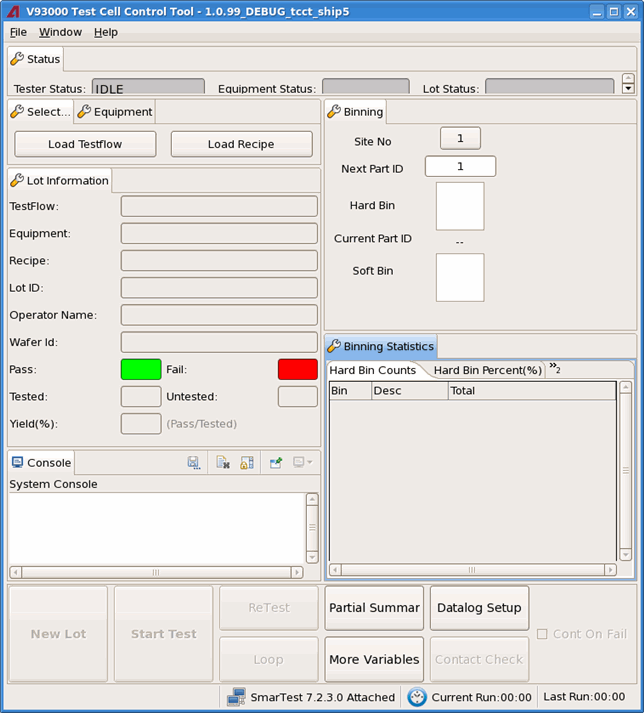

Configuring the layout of the Test Cell Control Tool
An xml file is used to configure the layout of the Test Cell Control Tool.
About this task
When starting TCCT, if the UI configuration file is not specified explicitly in the command line or is not set in the file production_environment_config.xml, it will search for the file /etc/opt/hp93000/tcct/tcct_gui_configuration.xml to configure the layout of the GUI. If the file is not available, it will search for the file /opt/hp93000/tcct/etc/tcct_gui_configuration.xml to configure the TCCT GUI. If both files are not available, it will use the default TCCT layout as shown in Test Cell Control Tool.
Before you begin
Make sure the TCCT 1.5 or above is installed.
Procedures
For engineering mode
- Create a UI configuration file with the elements described in the TCCT UI configuration file.
- Specify the UI configuration file when starting TCCT from the command line like
below:
/opt/hp93000/tcct/bin/tcct –u <ui_config_file_path_name>
For production mode
- Create a UI configuration file with the elements described in the TCCT UI configuration file.
- Use one of the following two ways to start TCCT with the created UI configuration file.
- Specify the UI configuration file when starting TCCT in production mode from the command line like below:
/opt/hp93000/tcct/bin/tcct.prod –u <ui_config_file_path_name>
or
- Switch to the root user and specify the configuration file like below in the file /etc/opt/hp93000/tcct/production_environment_config.xml and start TCCT in production mode.
<tcct> <ui_configure_file>/etc/opt/hp93000/tcct/tcct_ui_config_prod.xml</ui_configure_file> ... </tcct>
Results
The TCCT GUI is changed according to your definition in the configuration file.
Example
<TCCT xmlns="http://www.advantest.com/tcct/presentation"
xmlns:widget="http://www.advantest.com/tcct/widgets">
<!--Root Frame Node -->
<Frame columns="1">
<!--Top Panel -->
<Frame columns="1" ratio="10%">
<!--Status View -->
<View title="Status" isCloseable="false" isFloating="false">
<Group columns="3">
<widget:Tester_Status_Widget />
<widget:Equipment_Status_Widget />
<widget:Lot_Status_Widget />
</Group>
</View>
</Frame>
<!--Media Panel -->
<Frame columns="2" ratio="75%">
<!--Left Frame of Media Panel -->
<Frame columns="1" ratio="50%">
<!--Top Frame of Left Frame -->
<Frame columns="1" ratio="16%">
<!--Load Testflow View/Load Recipe View/Connect Equipment View -->
<View>
<Tab title="Select..." isCloseable="false" isFloating="true">
<Group columns="2">
<widget:Load_TF_Widget />
<widget:Load_Recipe_Widget />
</Group>
</Tab>
<Tab title="Equipment">
<Group columns="1">
<widget:Connect_Equipment_Widget />
</Group>
</Tab>
</View>
</Frame>
<!--Middle Frame of left Frame -->
<Frame columns="1" ratio="60%">
<!--Lot Summary View -->
<View title="Lot Information">
<Group>
<widget:LineEntry name="testflow" displayName="TestFlow:" />
<widget:LineEntry name="equipment" displayName="Equipment:" />
<widget:LineEntry name="recipe" displayName="Recipe:" />
<widget:LineEntry name="TC.LOT_ID" displayName="Lot ID:" />
<widget:LineEntry name="TC.OPER_NAM" displayName="Operator Name:" />
<widget:LineEntry name="TC.WAFER_ID" displayName="Wafer Id:" />
<widget:Yield_Widget />
</Group>
</View>
</Frame>
<!--Bottom Frame of Left Frame -->
<Frame columns="1" ratio="24%">
<!--Console View -->
<ConsoleView>
</ConsoleView>
</Frame>
</Frame>
<!--Right Frame of Media Panel -->
<Frame columns="1" ratio="50%">
<!--Top Frame of Right Frame -->
<Frame columns="1" ratio="50%">
<!--binning View -->
<View title="Binning" isFloating="true">
<Group>
<widget:Binning_Widget />
</Group>
</View>
</Frame>
<!--Bottom Frame of Right Frame -->
<Frame columns="1" ratio="50%">
<!--binning statisc View -->
<View title="Binning Statistics" isFloating="true">
<Group>
<widget:Binning_Statistics_Widget />
</Group>
</View>
</Frame>
</Frame>
</Frame>
<!--Bottom Panel -->
<Frame columns="1" ratio="15%">
<!--ControlPanl View -->
<View isStandalone="true">
<Group columns="6">
<Group columns="1">
<widget:Lot_Control_Widget />
</Group>
<Group columns="1">
<widget:Test_Control_Widget />
</Group>
<Group columns="1">
<widget:Retest_Widget />
<widget:Loop_Widget />
</Group>
<Group columns="1">
<widget:Partial_Summary_Widget />
<widget:Datalog_Variables_Widget />
</Group>
<Group columns="1">
<widget:Datalog_File_Control_Widget />
<widget:Contact_Check_Widget />
</Group>
<Group columns="1">
<widget:ContinueOnFail_Widget />
</Group>
</Group>
</View>
</Frame>
</Frame>
</TCCT>The example file configures the TCCT UI as below:

Functional changes
- Introduced in SmarTest 7.2.3